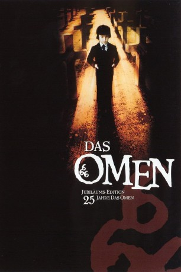
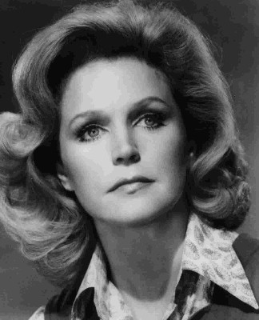

#5317 Das Omen
Alternativ: The Omen
Auszeichnungen: 1 Oscars gewonnen für 1 Oscars nominiert
 
 IMDB-Wertung: 7.6 / 10
IMDB-Wertung: 7.6 / 10  Metascore: 0
Metascore: 0 
Robert Thorn und seine Frau Katherine erwarten ihr erstes Kind. Doch bei der Geburt stirbt das Baby, und die in einem römischen Krankenhaus tätigen Priester bieten Thorn an, stattdessen ein zur gleichen Zeit geborenes Kind, deren Mutter angeblich bei der Geburt gestorben ist und das keine Verwandten haben soll, zu adoptieren. Thorn stimmt nach anfänglichem Zögern zu, denn er weiß, wie problematisch für Katherine das Wissen um die Fehlgeburt wäre. Nichts ahnend ist Katherine überglücklich über den scheinbar gemeinsamen Sohn, den die beiden Damien nennen. Doch der Junge erweist sich schon bald als der personifizierte Antichrist. Schreckliche Dinge geschehen in seiner Gegenwart und viele der Dinge, sind nicht mit natürlichen Überlegungen zu erklären. Und schon bald müssen auch Robert und Katherine um ihr Wohl bangen, denn Damien scheint nichts und niemand stoppen zu können...
Jahr: 1976
Dauer: 111 Minuten
FSK: 16
Land: England Studio: 20th Century Fox Home EntertainmentTonspuren: DTS - ,
Untertitel: Deutsch,
Auflösung: 1080p (1920x816) Größe: 7823 MB
Genre: Horror
Regisseur:  Richard Donner
Richard Donner
Drehbuch: Stewart Harcourt
Soundtrack:
Darsteller:
 Gregory Peck als Robert Thorn
Gregory Peck als Robert Thorn-  Lee Remick als Katherine Thorn
 David Warner als Jennings
David Warner als Jennings Billie Whitelaw als Mrs. Baylock
Billie Whitelaw als Mrs. Baylock- Harvey Stephens als Damien
- Patrick Troughton als Father Brennan
- Anthony Nicholls als Dr. Becker
- Holly Palance als Nanny
 Nicholas Campbell als Marine
Nicholas Campbell als Marine- Ya'ackov Banai als Arab
 Michael Byrne als Monk , uncredited
Michael Byrne als Monk , uncredited Leo McKern als Carl Bugenhagen , uncredited
Leo McKern als Carl Bugenhagen , uncredited Martin Benson als Father Spiletto
Martin Benson als Father Spiletto- Robert Rietty als Monk
- Tommy Duggan als Priest
- John Stride als The Psychiatrist
- Roy Boyd als Reporter
- Freda Dowie als Nun
- Sheila Raynor als Mrs. Horton
- Robert MacLeod als Horton
 Bruce Boa als Thorn's Aide
Bruce Boa als Thorn's Aide Don Fellows als Thorn's Second Aide
Don Fellows als Thorn's Second Aide- Patrick McAlinney als Photographer
- Dawn Perllman als Chambermaid
- Nancy Mannigham als Nurse
- Miki Iveria als First Nun
- Betty McDowall als American Secretary
- Burnell Tucker als Secret Service Man
- Ronald Leigh-Hunt als Gentleman at Rugby Match
- Guglielmo Spoletini als Italian Taxi Driver
- Harvey Bernhard als Man Walking Across Street , uncredited
 Victor Harrington als Monk , uncredited
Victor Harrington als Monk , uncredited Juba Kennerley als Rugby Match Spectator , uncredited
Juba Kennerley als Rugby Match Spectator , uncredited- Bill Reimbold als General , uncredited
- Christine Spooner als Funeral Mourner , uncredited
- Damian John Spooner als Boy at Top of Slide , uncredited
Datei: X:\2-Dilogie(N-Z)\Omen\Omen, Das (1976, FSK16, 1920x816).mkv seit 12.01.2017
Festplatte: HD Collection-2(A-Z)-3(A-M)
 Alle Filme aus Gruppe '2-Dilogie(N-Z)\Omen'
Alle Filme aus Gruppe '2-Dilogie(N-Z)\Omen'